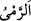
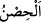
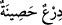
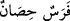

taş ve benzeri şeyleri atmaktır.
el-İrşâd’da der ki: “O kimselerin kadınlar hakkında ağızlarına aldıkları sözlerin __WORD__ (atmak) diye ifâde edilmesi, atma âletinin sertliğini, kendisine atılan kimseye elem
verdiğini haber vermekte, sonra da o kadınlara tesirinin şiddetini bildirmektedir.
“__WORD__”; nâmuslu, iffetli kadınlar demektir. Kendiliğinden nâmuslu olan kadına
“muhsana”, başkası sebebiyle namuslu olan kadına ise “muhsıne” denir. “__WORD__,
esasında kale anlamındadır. Sonra bu mânâyı aşarak koruma ve muhâfaza etme özelliği
taşıyan her şey için kullanılmıştır. Bedeni koruduğu için zırha “__WORD__, kendisine
bineni koruduğu için ata
“__WORD__ ve nâmusunu koruyan iffetli kadına da “__WORD__ denir.
Namuslu kadınların, zinâ edenlerin peşi sıra zikrolunmasından hareketle yapılan
iftirânın zinâ iftirâsı olduğu rahatlıkla anlaşılır. Burada namuslu kadınların tahsis
edilmesi, onlar hakkında zinâ isnâdının daha yaygın olması sebebiyledir. Yoksa hüküm
bakımından erkeğe ve kadına zinâ isnâd etmek eşittir. Yine burada bahsedilen kadınlar
yabancı kadınlardır. Çünkü kişinin nikâhı altında bulundurduğu hanımına zinâ isnad
etmesi durumunda uygulanacak hüküm bir sonraki âyette bildirilmiştir.
Zinâ isnâdının suç sayılması için kendisine isnâdda bulunan kimsede şu beş şartın
bulunması gerektiğinde icmâ edilmiştir: Hür, bülûğ çağına ermiş, akıllı, müslüman ve
zinâdan uzak olmak. Hatta bir kimse yeni bülûğa erdiği zaman bir defa zinâ etse sonra
tevbe edip hâlini düzeltse, bir kimse de ona zinâ isnâdında bulunsa o kimseye had
uygulanmaz.
Zinâ iftirâsında bulunmak; aklı başında bir kimsenin namuslu bir kadına: “Ey zinâkâr
kadın!” veya bir kimseye: “Ey zinâkâr adamın oğlu, ey zinâkâr kadının çocuğu, ey
veled-i zinâ (zinâdan olma)” yahut öfke ile: “Sen babana âid değilsin” demektir. Birine:
“Ey fâsık, ey şarab içen, ey fâiz yiyen, ey habîs, ey nasrânî, ey yahûdi veya ey mecûsî”
diyerek iftirâda bulunmak da muhsan olmayana yapılan zinâ iftirâsında olduğu gibi
ta‘ziri gerektirir. Ta’zirin çoğu otuz dokuz sopa, azı üç sopadır. Çünkü ta‘zîrin haddin en
azı olan kırka ulaşmaması gerekir. Kırk sopa zinâ iftirâsında ve içki içme konusunda
kölelerin haddidir. İmam Ebû Yûsuf ise hürlerin haddi olan seksen sopayı esas almış,
bir rivâyete göre ondan bir sopa, başka bir rivâyete göre beş sopa azaltmış ve “Devlet
başkanı isterse yüz sopaya kadar ta’zîr cezâsı uygulayabilir.” demiştir.
Ta‘zir ile had arasındaki fark şudur: Haddin miktarı nasla bildirilmiş ta‘zirin miktarı
ise devlet başkanının görüşüne bırakılmıştır. Had şüphelerle kaldırılır fakat ta‘zir
kaldırılmaz. Çocuğa had uygulamak gerekmez, ama ta‘zir uygulanmalıdır. Gerektiği
zaman zimmîye de had uygulanır, fakat ta‘zir uygulanmaz. Çünkü ta‘zir cezâsı suçluyu
günahından arındırıp temizlemek için meşrû kılınmış bir cezâdır. Kâfirin ise kâfir
kaldığı sürece temizlenmesi mümkün değildir. Bir cezâ olarak takdir edilmeksizin
zimmet ehli hakkında ta‘zir geçerlidir. Belli bir sürenin geçmesi haddi düşürdüğü halde
ta‘ziri düşürmez. Ta‘zir kul haklarından biri olup bunda hakkından vazgeçmek, affetmek,